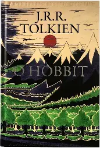
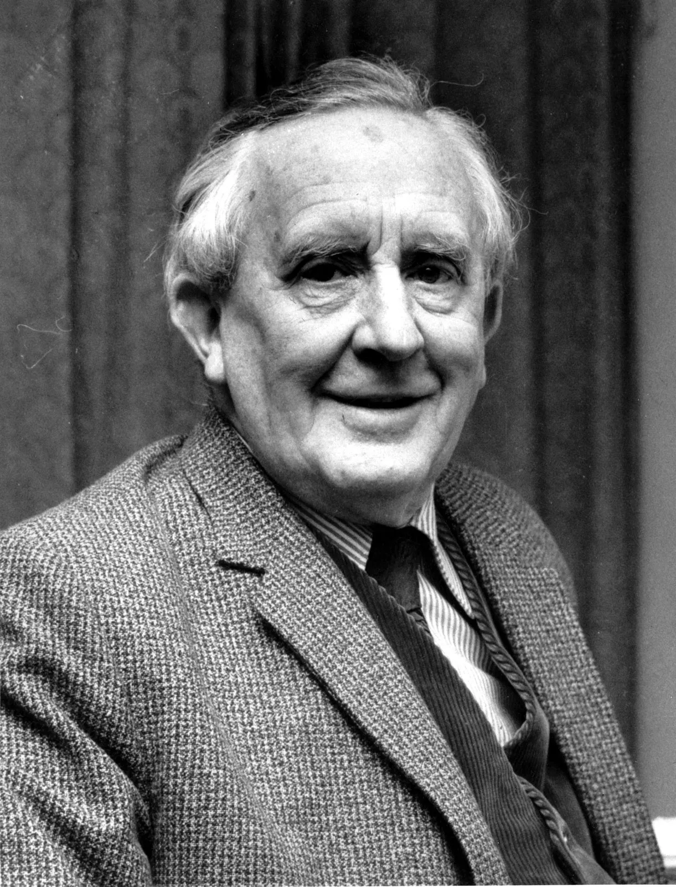
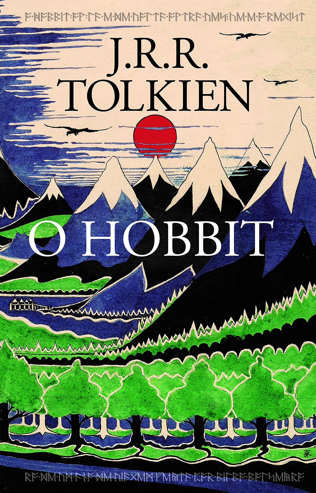
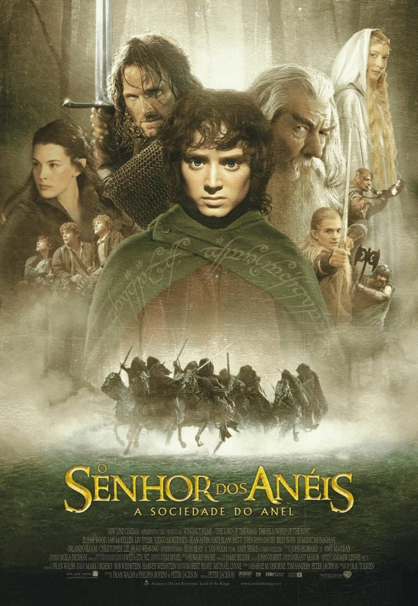
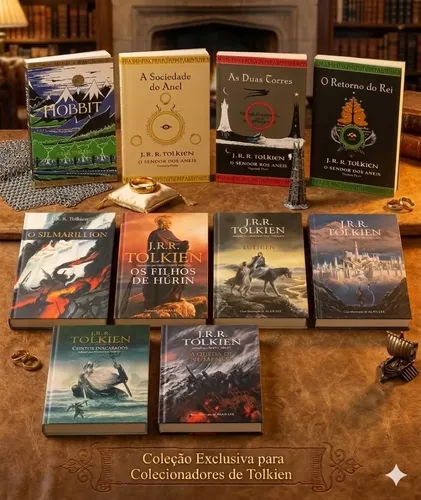
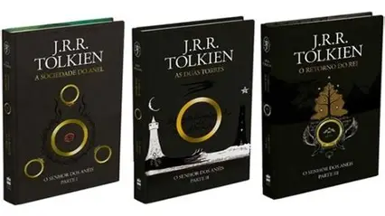
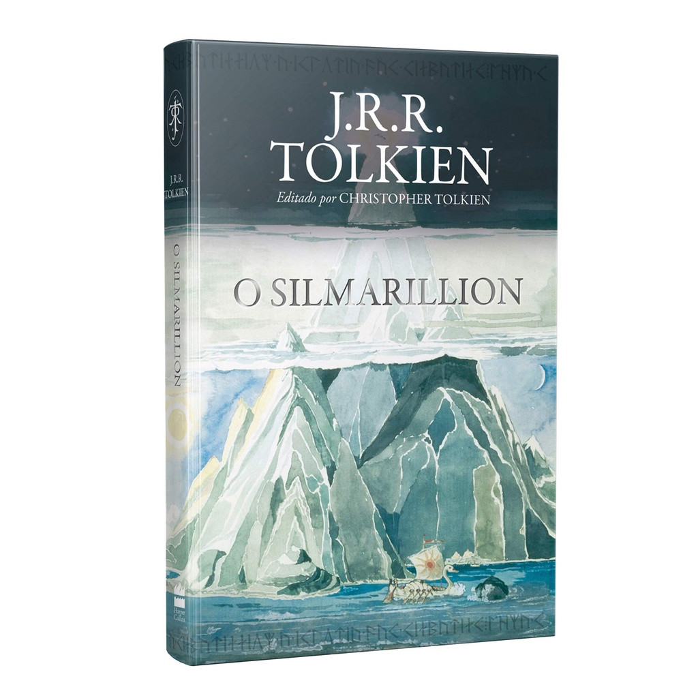

Biografia
John Ronald Reuel Tolkien, mais conhecido como J. R. R. Tolkien, foi um dos escritores mais importantes da literatura fantástica. Nasceu em 3 de janeiro de 1892, em Bloemfontein, na atual África do Sul. Filho de pais britânicos, mudou-se para a Inglaterra ainda criança, aos três anos, junto com a mãe e o irmão. Foi nesse país que cresceu, estudou e construiu sua carreira, tornando-se um escritor britânico.
Tolkien dedicou grande parte de sua vida ao estudo das palavras e das línguas. Foi filólogo, ou seja, um estudioso da história, da estrutura e da evolução dos idiomas, e professor universitário na Universidade de Oxford. Em 1925, assumiu a cátedra de anglo-saxão e, em 1945, passou a lecionar língua e literatura inglesas. Aposentou-se em 1959. Sua paixão por idiomas também o levou a criar línguas próprias, como o quenya e o sindarin, utilizadas pelos elfos em suas histórias.
Apesar de sua importante carreira acadêmica, Tolkien conquistou reconhecimento mundial como escritor. Foi o criador da Terra-média, um universo fantástico habitado por hobbits, elfos, anões, magos e diversas outras criaturas. Entre suas obras mais conhecidas estão O Hobbit, publicado em 1937, e O Senhor dos Anéis, lançado em três volumes entre 1954 e 1955. Muitas de suas histórias nasceram de narrativas que inventava para entreter os próprios filhos.
Na vida pessoal, Tolkien conheceu Edith Bratt ainda jovem, e os dois se apaixonaram. O relacionamento enfrentou dificuldades quando seu tutor, o padre Francis Morgan, proibiu que mantivessem contato até Tolkien completar 21 anos. Quando voltaram a se encontrar, Edith estava noiva de outro homem, mas rompeu o compromisso. Ela também se converteu ao catolicismo, religião de Tolkien. Os dois se casaram em 22 de março de 1916, durante a Primeira Guerra Mundial, e tiveram quatro filhos: John, Michael, Christopher e Priscilla.
Tolkien e Edith permaneceram casados por 55 anos, até a morte dela, em novembro de 1971. O escritor faleceu em 2 de setembro de 1973, em Bournemouth, na Inglaterra. Os dois foram sepultados juntos, em Oxford, e em sua lápide foram gravados os nomes “Beren” e “Lúthien”, em homenagem a um dos casais mais marcantes da mitologia criada por Tolkien. A história desses personagens também guarda um significado pessoal para o escritor, que encontrou em sua relação com Edith uma inspiração para esse amor lendário.

O Hobbit
Depois de conhecer a vida de J. R. R. Tolkien, é possível compreender melhor uma de suas obras mais famosas: O Hobbit, publicado em 1937. Escrito por Tolkien, professor e apaixonado por línguas, o livro se passa na Terra-média, o universo de fantasia criado pelo autor.
A história começa quando Gandalf, um mago, visita Bilbo Bolseiro, um hobbit que leva uma vida tranquila no Condado. Gandalf o convida a acompanhar treze anões, liderados por Thorin Escudo-de-Carvalho, em uma jornada para recuperar a Montanha Solitária, antiga morada dos anões, e o tesouro que foi tomado pelo dragão Smaug.
Assim como muitos heróis de grandes aventuras, Bilbo passa por uma transformação. No início, é um personagem tímido, apegado ao conforto de sua casa. Ao longo da jornada, porém, enfrenta trolls, goblins e aranhas gigantes, além de encontrar Gollum. É nesse encontro que Bilbo obtém um anel mágico capaz de torná-lo invisível, objeto que terá um papel fundamental em O Senhor dos Anéis.
O Hobbit demonstra a criatividade de Tolkien ao combinar aventura, mitologia e a construção de um universo rico em detalhes. O livro conquistou leitores e abriu caminho para O Senhor dos Anéis, consolidando o legado de Tolkien como um dos grandes nomes da literatura fantástica.
Livros
- O Hobbit
Filmes
- Uma Jornada Inesperada (2012)
- A Desolação de Smaug (2013)
- A Batalha dos Cinco Exércitos (2014)

O Senhor dos Anéis
Se O Hobbit apresentou a Terra-média aos leitores, O Senhor dos Anéis transformou esse universo em uma das maiores sagas da literatura fantástica. Escrita por J. R. R. Tolkien, a obra foi publicada em três volumes entre 1954 e 1955: A Sociedade do Anel, As Duas Torres e O Retorno do Rei.
A história acontece anos depois das aventuras de Bilbo Bolseiro. Ao deixar seu anel mágico para Frodo, seu sobrinho, Bilbo dá início a uma jornada muito maior do que poderia imaginar. Gandalf descobre que o objeto é o Um Anel, criado por Sauron, o Senhor das Trevas, para dominar a Terra-média.
Para impedir que Sauron recupere seu poder, Frodo precisa levar o Anel até a Montanha da Perdição, em Mordor, onde ele foi forjado e pode ser destruído. Nessa missão, conta com a ajuda da Sociedade do Anel, formada por quatro hobbits, dois homens, um elfo, um anão e Gandalf. Juntos, eles enfrentam perigos, conflitos e a influência corruptora do Anel.
A obra explora temas como amizade, coragem, sacrifício e a luta entre o bem e o mal. Assim como em O Hobbit, Tolkien combina sua paixão por línguas e mitologias com a criação de um mundo detalhado, repleto de povos, culturas, histórias e idiomas próprios.
O Senhor dos Anéis tornou-se um marco da literatura mundial e influenciou gerações de escritores, além de inspirar adaptações para o cinema, jogos e outras obras de fantasia. A história amplia o universo apresentado em O Hobbit e consolidou a Terra-média como um dos mundos mais conhecidos da literatura fantástica.
Livros
- A Sociedade do Anel
- As Duas Torres
- O Retorno do Rei
Filmes
- A Sociedade do Anel (2001)
- As Duas Torres (2002)
- O Retorno do Rei (2003)
Tolkien e C. S. Lewis
Além de ser um grande escritor, J. R. R. Tolkien teve uma amizade importante com C. S. Lewis, autor de As Crônicas de Nárnia. Os dois se conheceram em Oxford, em 1926, e descobriram que compartilhavam o interesse por mitologia, histórias fantásticas e línguas antigas.
Juntos, fizeram parte dos Inklings, um grupo informal de escritores e professores que se reunia em Oxford para ler, discutir e comentar os textos que estavam criando. Nessas reuniões, Tolkien chegou a ler trechos de O Senhor dos Anéis, enquanto Lewis compartilhava seus próprios escritos.
A amizade exerceu influência sobre os dois. Tolkien teve um papel importante no caminho de Lewis de volta ao cristianismo, enquanto Lewis incentivou Tolkien e reconheceu o valor de sua obra. As conversas e os encontros dos Inklings também ofereceram um espaço para trocar ideias e receber críticas construtivas durante o processo de criação.
Embora tenham tido divergências ao longo dos anos, a amizade entre Tolkien e Lewis marcou suas trajetórias literárias. A relação entre os dois mostra como a troca de ideias e o apoio entre escritores podem contribuir para o desenvolvimento de grandes obras da literatura.
▶ Saiba mais sobre C.S Lewis
Outras Obras
Além de O Hobbit e O Senhor dos Anéis, Tolkien criou muitas outras histórias sobre a Terra-média, especialmente sobre as eras antigas desse universo. Várias dessas obras foram publicadas após sua morte, pois seu filho, Christopher Tolkien, organizou e editou os manuscritos deixados pelo pai.
Uma das obras mais importantes é O Silmarillion, publicado em 1977. O livro apresenta a criação da Terra-média, a origem dos elfos, dos anões e dos homens, além das guerras contra Morgoth, o primeiro Senhor das Trevas. Diferentemente de um romance de aventura tradicional, a obra se aproxima de uma coletânea de mitos e lendas.
Contos Inacabados de Númenor e da Terra-média, publicado em 1980, reúne narrativas, ensaios e versões de histórias que Tolkien não chegou a concluir ou organizar definitivamente em vida. A obra aprofunda aspectos de Númenor, dos magos, de Gandalf e de outros elementos do universo criado pelo autor.
Entre os chamados “Três Grandes Contos” da Primeira Era estão Os Filhos de Húrin, Beren e Lúthien e A Queda de Gondolin. Publicados em edições próprias em 2007, 2017 e 2018, respectivamente, eles apresentam histórias marcantes: a tragédia de Túrin Turambar e sua família, o amor entre Beren e a elfa Lúthien e a destruição da cidade élfica de Gondolin.
Outra obra importante é A Queda de Númenor, publicada em 2022. Organizada por Brian Sibley a partir de textos de Tolkien, ela reúne relatos sobre a Segunda Era da Terra-média, período anterior aos acontecimentos de O Senhor dos Anéis.
Essas obras mostram que Tolkien não criou apenas histórias isoladas, mas um universo literário amplo, com mitos, línguas, povos e séculos de história. Seu trabalho ajudou a transformar a literatura fantástica e continua despertando o interesse de leitores de diferentes gerações.
A BIBLIOTECA DA TERRA-MÉDIA
Encontre sua próxima aventura
Explore algumas das obras de J. R. R. Tolkien e escolha qual jornada deseja levar para sua estante.

O Senhor dos Anéis
Uma grande jornada de amizade, coragem e esperança pela Terra-média.
Ver na livraria
O Silmarillion
Conheça as origens míticas e as lendas das primeiras eras desse mundo.
Ver na livraria